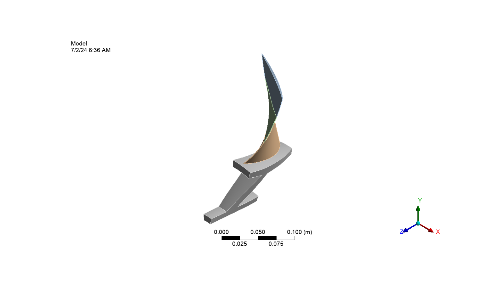
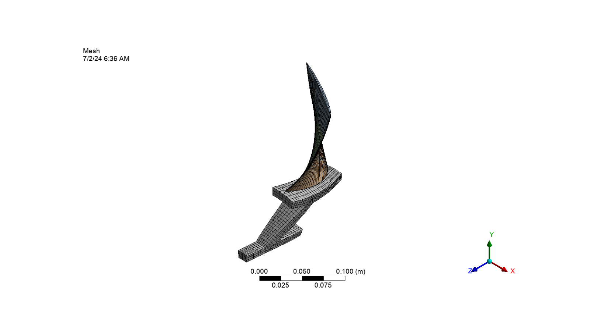
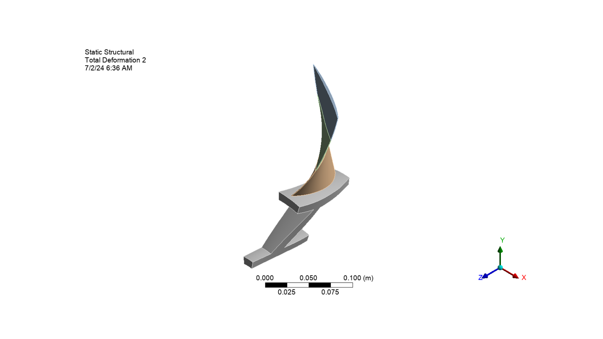
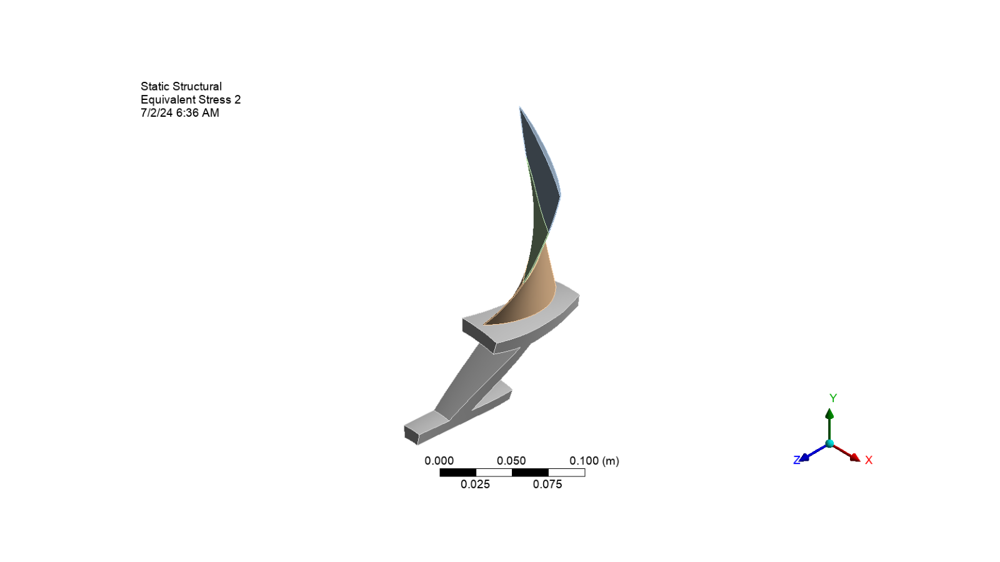

Note
Go to the end to download the full example code.
Inverse-Solving analysis of a rotor fan blade with disk#
This example demonstrates the inverse-solving analysis of a rotor fan blade with disk. The NASA Rotor 67 fan bladed disk is a subsystem of a turbo fan’s compressor set used in aerospace engine applications. This sector model, representing a challenging industrial example for which the detailed geometry and flow information is available in the public domain, consists of a disk and a fan blade with a sector angle of 16.364 degrees. The sector model represents the running condition or hot geometry of the blade. It is already optimized at the running condition under loading. The primary objective is to obtain the cold geometry (for manufacturing) from the given hot geometry using inverse solving.
ELEMENTS: SOLID186
MATERIAL: Elastic Material
CONTACT: MPC bonded contact pair
To highlight Mechanical APDL inverse-solving technology, this example problem does not involve a cyclic symmetry analysis.
Material Properties:
Temperature |
Density |
Young’s Modulus |
Poisson’s Ratio |
Coeff of Thermal Expansion |
|---|---|---|---|---|
22 deg C |
7840 |
2.2e11 Pa |
0.27 |
1.2e-5 |
200 deg C |
7740 |
2e11 Pa |
0.28 |
1.3e-5 |
300 deg C |
7640 |
1.9e11 Pa |
0.29 |
1.4e-5 |
600 deg C |
7540 |
1.8e11 Pa |
0.30 |
1.5e-5 |
Following loads are considered:
The rotational velocity (CGOMGA,0,0,1680) is applied along the global Z axis. The reference temperature is maintained at 22°C, and the temperature loading is applied on the blade (BF)
Expected results:
Inverse-Solving Analysis: A nonlinear static analysis using inverse solving (INVOPT,ON) is performed on the hot geometry of the model to obtain the cold geometry (for manufacturing) and the stress/strain results on the hot geometry.
import os
import ansys.mechanical.core as mech
from ansys.mechanical.core.examples import delete_downloads, download_file
from matplotlib import image as mpimg
from matplotlib import pyplot as plt
Embed mechanical and set global variables
app = mech.App(version=241)
app.update_globals(globals())
print(app)
cwd = os.path.join(os.getcwd(), "out")
def display_image(image_name):
plt.figure(figsize=(16, 9))
plt.imshow(mpimg.imread(os.path.join(cwd, image_name)))
plt.xticks([])
plt.yticks([])
plt.axis("off")
plt.show()
Ansys Mechanical [Ansys Mechanical Enterprise]
Product Version:241
Software build date: 11/27/2023 10:24:20
Download required files#
Download the geometry file
geometry_path = download_file(
"example_10_td_055_Rotor_Blade_Geom.pmdb", "pymechanical", "embedding"
)
Download the material file
mat_path = download_file(
"example_10_td_055_Rotor_Blade_Mat_File.xml", "pymechanical", "embedding"
)
Download the CFX pressure data
cfx_data_path = download_file(
"example_10_CFX_ExportResults_FT_10P_EO2.csv", "pymechanical", "embedding"
)
Configure graphics for image export#
cwd = os.path.join(os.getcwd(), "out")
ExtAPI.Graphics.Camera.SetSpecificViewOrientation(
Ansys.Mechanical.DataModel.Enums.ViewOrientationType.Iso
)
ExtAPI.Graphics.Camera.SetFit()
image_export_format = Ansys.Mechanical.DataModel.Enums.GraphicsImageExportFormat.PNG
settings_720p = Ansys.Mechanical.Graphics.GraphicsImageExportSettings()
settings_720p.Resolution = (
Ansys.Mechanical.DataModel.Enums.GraphicsResolutionType.EnhancedResolution
)
settings_720p.Background = Ansys.Mechanical.DataModel.Enums.GraphicsBackgroundType.White
settings_720p.Width = 1280
# settings_720p.Capture = Ansys.Mechanical.DataModel.Enums.GraphicsCaptureType.ImageOnly
settings_720p.Height = 720
settings_720p.CurrentGraphicsDisplay = False
Import geometry#
Reads geometry file and display
geometry_import_group = Model.GeometryImportGroup
geometry_import = geometry_import_group.AddGeometryImport()
geometry_import_format = (
Ansys.Mechanical.DataModel.Enums.GeometryImportPreference.Format.Automatic
)
geometry_import_preferences = Ansys.ACT.Mechanical.Utilities.GeometryImportPreferences()
geometry_import_preferences.ProcessNamedSelections = True
geometry_import_preferences.NamedSelectionKey = ""
geometry_import_preferences.ProcessMaterialProperties = True
geometry_import_preferences.ProcessCoordinateSystems = True
geometry_import.Import(
geometry_path, geometry_import_format, geometry_import_preferences
)
ExtAPI.Graphics.Camera.SetFit()
ExtAPI.Graphics.ExportImage(
os.path.join(cwd, "geometry.png"), image_export_format, settings_720p
)
display_image("geometry.png")

Assign materials#
Import material from xml file and assign it to bodies
materials = ExtAPI.DataModel.Project.Model.Materials
materials.Import(mat_path)
PRT1 = [x for x in ExtAPI.DataModel.Tree.AllObjects if x.Name == "Component2\Rotor11"][
0
]
PRT2 = [x for x in ExtAPI.DataModel.Tree.AllObjects if x.Name == "Component3"][0]
PRT2_Blade_1 = PRT2.Children[0]
PRT2_Blade_2 = PRT2.Children[1]
PRT2_Blade_3 = PRT2.Children[2]
PRT1.Material = "MAT1 (Setup, File1)"
PRT2_Blade_1.Material = "MAT1 (Setup, File1)"
PRT2_Blade_2.Material = "MAT1 (Setup, File1)"
PRT2_Blade_3.Material = "MAT1 (Setup, File1)"
Define units system and store variables#
Select MKS units
ExtAPI.Application.ActiveUnitSystem = (
Ansys.ACT.Interfaces.Common.MechanicalUnitSystem.StandardMKS
)
# Store all main tree nodes as variables
MODEL = ExtAPI.DataModel.Project.Model
GEOM = ExtAPI.DataModel.Project.Model.Geometry
MESH = ExtAPI.DataModel.Project.Model.Mesh
MAT_GRP = ExtAPI.DataModel.Project.Model.Materials
CS = ExtAPI.DataModel.Project.Model.CoordinateSystems
Define named selection#
Create NS for named selection
NS_GRP = ExtAPI.DataModel.Project.Model.NamedSelections
BLADE_NS = [x for x in ExtAPI.DataModel.Tree.AllObjects if x.Name == "Blade"][0]
BLADE_SURF_NS = [x for x in ExtAPI.DataModel.Tree.AllObjects if x.Name == "Blade_Surf"][
0
]
FIX_SUPPORT_NS = [
x for x in ExtAPI.DataModel.Tree.AllObjects if x.Name == "Fix_Support"
][0]
BLADE_HUB_NS = [x for x in ExtAPI.DataModel.Tree.AllObjects if x.Name == "Blade_Hub"][0]
HUB_CONTACT_NS = [
x for x in ExtAPI.DataModel.Tree.AllObjects if x.Name == "Hub_Contact"
][0]
BLADE_TARGET_NS = [
x for x in ExtAPI.DataModel.Tree.AllObjects if x.Name == "Blade_Target"
][0]
Hub_Low_NS = [x for x in ExtAPI.DataModel.Tree.AllObjects if x.Name == "Hub_Low"][0]
Hub_High_NS = [x for x in ExtAPI.DataModel.Tree.AllObjects if x.Name == "Hub_High"][0]
BLADE1_NS = [x for x in ExtAPI.DataModel.Tree.AllObjects if x.Name == "Blade1"][0]
BLADE1_Source_NS = [
x for x in ExtAPI.DataModel.Tree.AllObjects if x.Name == "Blade1_Source"
][0]
BLADE1_TARGET_NS = [
x for x in ExtAPI.DataModel.Tree.AllObjects if x.Name == "Blade1_Target"
][0]
BLADE2_NS = [x for x in ExtAPI.DataModel.Tree.AllObjects if x.Name == "Blade2"][0]
BLADE2_Source_NS = [
x for x in ExtAPI.DataModel.Tree.AllObjects if x.Name == "Blade2_Source"
][0]
BLADE2_TARGET_NS = [
x for x in ExtAPI.DataModel.Tree.AllObjects if x.Name == "Blade2_Target"
][0]
BLADE3_NS = [x for x in ExtAPI.DataModel.Tree.AllObjects if x.Name == "Blade3"][0]
BLADE3_Source_NS = [
x for x in ExtAPI.DataModel.Tree.AllObjects if x.Name == "Blade3_Source"
][0]
BLADE3_TARGET_NS = [
x for x in ExtAPI.DataModel.Tree.AllObjects if x.Name == "Blade3_Target"
][0]
Define coordinate system#
Create cylindrical coordinate system
coordinate_systems = Model.CoordinateSystems
coord_system = coordinate_systems.AddCoordinateSystem()
coord_system.CoordinateSystemType = (
Ansys.ACT.Interfaces.Analysis.CoordinateSystemTypeEnum.Cylindrical
)
coord_system.OriginDefineBy = CoordinateSystemAlignmentType.Component
coord_system.OriginDefineBy = CoordinateSystemAlignmentType.Fixed
Define contacts#
Delete existing contacts and define connections
connections = ExtAPI.DataModel.Project.Model.Connections
# Delete existing contacts
# for connection in connections.Children:
# if connection.DataModelObjectCategory==DataModelObjectCategory.ConnectionGroup:
# connection.Delete()
# Define connections
CONN_GRP = ExtAPI.DataModel.Project.Model.Connections
CONT_REG1 = CONN_GRP.AddContactRegion()
CONT_REG1.SourceLocation = NS_GRP.Children[6]
CONT_REG1.TargetLocation = NS_GRP.Children[5]
CONT_REG1.Behavior = ContactBehavior.AutoAsymmetric
CONT_REG1.ContactFormulation = ContactFormulation.MPC
Define mesh settings and generate mesh#
MSH = Model.Mesh
MSH.ElementSize = Quantity(0.004, "m")
MSH.UseAdaptiveSizing = False
MSH.MaximumSize = Quantity(0.004, "m")
MSH.ShapeChecking = 0
automatic_method_Hub = MSH.AddAutomaticMethod()
automatic_method_Hub.Location = NS_GRP.Children[0]
automatic_method_Hub.Method = MethodType.Sweep
automatic_method_Hub.SweepNumberDivisions = 6
match_control_Hub = MSH.AddMatchControl()
match_control_Hub.LowNamedSelection = NS_GRP.Children[7]
match_control_Hub.HighNamedSelection = NS_GRP.Children[8]
cyc_coordinate_system = coordinate_systems.Children[1]
match_control_Hub.RotationAxis = cyc_coordinate_system
sizing_Blade = MSH.AddSizing()
selection = NS_GRP.Children[5]
sizing_Blade.Location = selection
# sizing_Blade.ElementSize = Quantity(1e-3, "m")
sizing_Blade.ElementSize = Quantity(1e-2, "m")
sizing_Blade.CaptureCurvature = True
sizing_Blade.CurvatureNormalAngle = Quantity(0.31, "rad")
# sizing_Blade.LocalMinimumSize = Quantity(0.00025, "m")
sizing_Blade.LocalMinimumSize = Quantity(0.0005, "m")
automatic_method_Blade1 = MSH.AddAutomaticMethod()
selection = NS_GRP.Children[9]
automatic_method_Blade1.Location = selection
automatic_method_Blade1.Method = MethodType.Sweep
automatic_method_Blade1.SourceTargetSelection = 2
selection = NS_GRP.Children[10]
automatic_method_Blade1.SourceLocation = selection
selection = NS_GRP.Children[11]
automatic_method_Blade1.TargetLocation = selection
automatic_method_Blade1.SweepNumberDivisions = 5
automatic_method_Blade2 = MSH.AddAutomaticMethod()
selection = NS_GRP.Children[12]
automatic_method_Blade2.Location = selection
automatic_method_Blade2.Method = MethodType.Sweep
automatic_method_Blade2.SourceTargetSelection = 2
selection = NS_GRP.Children[13]
automatic_method_Blade2.SourceLocation = selection
selection = NS_GRP.Children[14]
automatic_method_Blade2.TargetLocation = selection
automatic_method_Blade2.SweepNumberDivisions = 5
automatic_method_Blade3 = MSH.AddAutomaticMethod()
selection = NS_GRP.Children[15]
automatic_method_Blade3.Location = selection
automatic_method_Blade3.Method = MethodType.Sweep
automatic_method_Blade3.SourceTargetSelection = 2
selection = NS_GRP.Children[16]
automatic_method_Blade3.SourceLocation = selection
selection = NS_GRP.Children[17]
automatic_method_Blade3.TargetLocation = selection
automatic_method_Blade3.SweepNumberDivisions = 5
MSH.GenerateMesh()
ExtAPI.Graphics.Camera.SetFit()
ExtAPI.Graphics.ExportImage(
os.path.join(cwd, "blade_mesh.png"), image_export_format, settings_720p
)
display_image("blade_mesh.png")

Define analysis settings#
Setup static structural settings with inverse solve
Model.AddStaticStructuralAnalysis()
STAT_STRUC = Model.Analyses[0]
ANA_SETTINGS = ExtAPI.DataModel.Project.Model.Analyses[0].AnalysisSettings
ANA_SETTINGS.NumberOfSteps = 2
ANA_SETTINGS.AutomaticTimeStepping = AutomaticTimeStepping.Off
ANA_SETTINGS.NumberOfSubSteps = 20
ANA_SETTINGS.Activate()
ANA_SETTINGS.CurrentStepNumber = 2
ANA_SETTINGS.AutomaticTimeStepping = AutomaticTimeStepping.Off
ANA_SETTINGS.NumberOfSubSteps = 20
ANA_SETTINGS.InverseOption = True
ANA_SETTINGS.LargeDeflection = True
Define boundary conditions#
Apply rotational velocity
ROT_VEL = STAT_STRUC.AddRotationalVelocity()
ROT_VEL.DefineBy = LoadDefineBy.Components
ROT_VEL.ZComponent.Inputs[0].DiscreteValues = [
Quantity("0 [s]"),
Quantity("1 [s]"),
Quantity("2 [s]"),
]
ROT_VEL.ZComponent.Output.DiscreteValues = [
Quantity("0 [rad/s]"),
Quantity("1680 [rad/s]"),
Quantity("1680 [rad/s]"),
]
# Apply Fixed Support Condition
Fixed_Support = STAT_STRUC.AddFixedSupport()
selection = NS_GRP.Children[3]
Fixed_Support.Location = selection
# Apply Thermal load to the Structural Blade
Thermal_Condition = STAT_STRUC.AddThermalCondition()
selection = NS_GRP.Children[1]
Thermal_Condition.Location = selection
Thermal_Condition.Magnitude.Inputs[0].DiscreteValues = [
Quantity("0 [s]"),
Quantity("1 [s]"),
Quantity("2 [s]"),
]
Thermal_Condition.Magnitude.Output.DiscreteValues = [
Quantity("22 [C]"),
Quantity("80 [C]"),
Quantity("80 [C]"),
]
Import CFX pressure#
Import CFX pressure data and apply it to structural blade surface
Imported_Load_Group = STAT_STRUC.AddImportedLoadExternalData()
external_data_files = Ansys.Mechanical.ExternalData.ExternalDataFileCollection()
external_data_files.SaveFilesWithProject = False
external_data_file_1 = Ansys.Mechanical.ExternalData.ExternalDataFile()
external_data_files.Add(external_data_file_1)
external_data_file_1.Identifier = "File1"
external_data_file_1.Description = ""
external_data_file_1.IsMainFile = False
external_data_file_1.FilePath = cfx_data_path
external_data_file_1.ImportSettings = (
Ansys.Mechanical.ExternalData.ImportSettingsFactory.GetSettingsForFormat(
Ansys.Mechanical.DataModel.MechanicalEnums.ExternalData.ImportFormat.Delimited
)
)
import_settings = external_data_file_1.ImportSettings
import_settings.SkipRows = 17
import_settings.SkipFooter = 0
import_settings.Delimiter = ","
import_settings.AverageCornerNodesToMidsideNodes = False
import_settings.UseColumn(
0,
Ansys.Mechanical.DataModel.MechanicalEnums.ExternalData.VariableType.XCoordinate,
"m",
"X Coordinate@A",
)
import_settings.UseColumn(
1,
Ansys.Mechanical.DataModel.MechanicalEnums.ExternalData.VariableType.YCoordinate,
"m",
"Y Coordinate@B",
)
import_settings.UseColumn(
2,
Ansys.Mechanical.DataModel.MechanicalEnums.ExternalData.VariableType.ZCoordinate,
"m",
"Z Coordinate@C",
)
import_settings.UseColumn(
3,
Ansys.Mechanical.DataModel.MechanicalEnums.ExternalData.VariableType.Pressure,
"Pa",
"Pressure@D",
)
Imported_Load_Group.ImportExternalDataFiles(external_data_files)
Imported_Pressure = Imported_Load_Group.AddImportedPressure()
selection = NS_GRP.Children[2]
Imported_Pressure.Location = selection
pressure_id = Imported_Pressure.ObjectId
mech_command = f"""Imported_Pressure = ExtAPI.DataModel.GetObjectById({pressure_id})
Imported_Pressure.InternalObject.ExternalLoadAppliedBy = 1
"""
app.execute_script(mech_command)
Imported_Pressure.ImportLoad()
Postprocessing#
Insert results
SOLN = STAT_STRUC.Solution
TOT_DEF1 = SOLN.AddTotalDeformation()
TOT_DEF1.DisplayTime = Quantity("1 [s]")
TOT_DEF2 = SOLN.AddTotalDeformation()
TOT_DEF2.DisplayTime = Quantity("2 [s]")
EQV_STRS1 = SOLN.AddEquivalentStress()
EQV_STRS1.DisplayTime = Quantity("1 [s]")
EQV_STRS2 = SOLN.AddEquivalentStress()
EQV_STRS2.DisplayTime = Quantity("2 [s]")
EQV_TOT_STRN1 = SOLN.AddEquivalentTotalStrain()
EQV_TOT_STRN1.DisplayTime = Quantity("1 [s]")
EQV_TOT_STRN2 = SOLN.AddEquivalentTotalStrain()
EQV_TOT_STRN2.DisplayTime = Quantity("2 [s]")
THERM_STRN1 = SOLN.AddThermalStrain()
THERM_STRN1.DisplayTime = Quantity("1 [s]")
THERM_STRN2 = SOLN.AddThermalStrain()
THERM_STRN2.DisplayTime = Quantity("2 [s]")
Run Solution#
Solve inverse analysis on blade model
SOLN.Solve(True)
STAT_STRUC_SS = SOLN.Status
Postprocessing#
Evaluate results and export screenshots
Total deformation
Tree.Activate([TOT_DEF2])
ExtAPI.Graphics.ViewOptions.ResultPreference.ExtraModelDisplay = (
Ansys.Mechanical.DataModel.MechanicalEnums.Graphics.ExtraModelDisplay.NoWireframe
)
ExtAPI.Graphics.ExportImage(
os.path.join(cwd, "deformation.png"), image_export_format, settings_720p
)
display_image("deformation.png")

Equivalent stress
Tree.Activate([EQV_STRS2])
ExtAPI.Graphics.ExportImage(
os.path.join(cwd, "stress.png"), image_export_format, settings_720p
)
display_image("stress.png")

Cleanup#
Save project
app.save(os.path.join(cwd, "blade_inverse.mechdat"))
app.new()
Delete example file
delete_downloads()
True
Total running time of the script: (0 minutes 7.005 seconds)